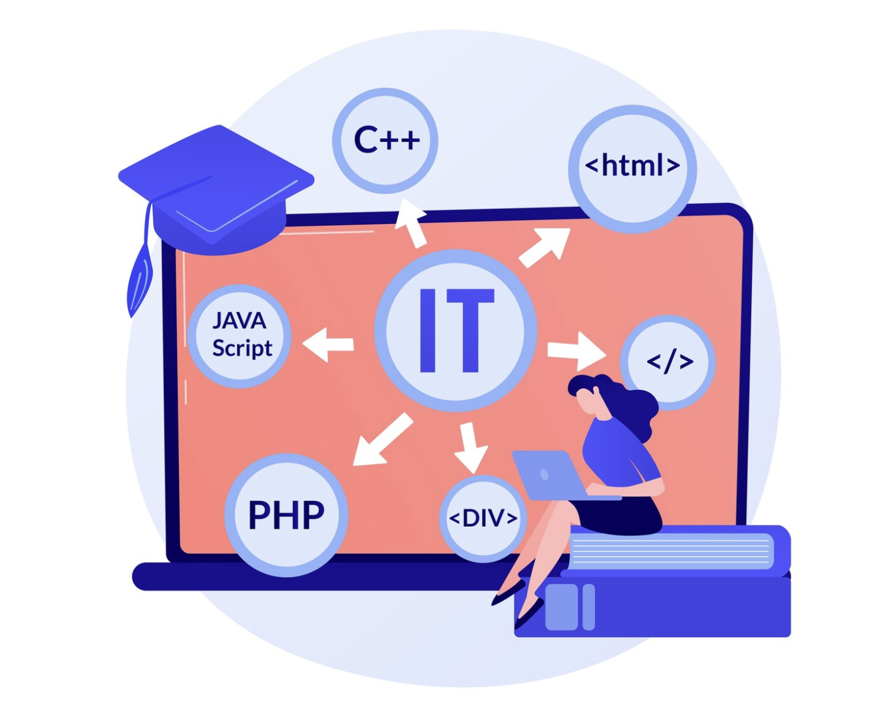

Desarrollo Full-Stack para perfiles Junior

En el dinámico mundo del desarrollo web, el rol de desarrollador Full Stack ha emergido como una carrera codiciada, ofreciendo la promesa de dominar tanto el frontend como el backend. Para los perfiles junior, esta trayectoria puede parecer a la vez emocionante y desalentadora, dada la amplia gama de habilidades y tecnologías que deben aprenderse. Este artículo explora el camino hacia el desarrollo Full Stack para perfiles junior, brindando insights sobre cómo navegar estos desafíos y capitalizar las oportunidades en este campo.

Entendiendo el Rol Full Stack
Un desarrollador Full Stack es aquel que tiene la capacidad de trabajar tanto en el frontend (la parte de la aplicación que interactúa con el usuario) como en el backend (el servidor, la aplicación y la base de datos). Esta dualidad requiere un conocimiento profundo de varias tecnologías y la habilidad de ver el proyecto desde una perspectiva integral.
Para los Perfiles Junior: ¿Por Dónde Empezar?
Para un perfil junior, el primer paso es construir una base sólida en las tecnologías fundamentales del desarrollo web: · Frontend: Comprender HTML, CSS y JavaScript es esencial. Estas son las piedras angulares que permiten crear interfaces de usuario interactivas y atractivas. · Backend: Aprender un lenguaje de programación del lado del servidor, como Python, Ruby, Node.js o Java, junto con los fundamentos de las bases de datos, tanto SQL como NoSQL. Una vez establecida esta base, es crucial familiarizarse con los sistemas de control de versiones como Git, y luego proceder a explorar frameworks más avanzados (React, Angular o Vue para frontend; Express.js, Django, o Ruby on Rails para backend) que facilitan el desarrollo de aplicaciones complejas.